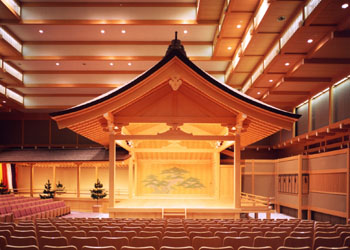

Social Programs
Opening Reception
There will be an opening reception on Sunday evening (July 29) at Restaurant Universal Club on campus. It is free of charge for all registered participants and accompanying persons.
Conference Banquet
The conference banquet will be held on Thursday evening (August 2) at Restaurant Shiro adjacent to Nagoya Nogakudo (Nagoya Noh Theater), which is situated just south of Nagoya Castle. Before the banquete, we enjoy a short Kyogen performance (Japanese classical comic theater) at Nagoya Nogakudo. The banquet costs 6,500 JPY per person, which includes the Kyogen performance.
An Introduction to Noh and Kyogen
http://www2.ntj.jac.go.jp/unesco/noh/en/
|  |
You must register the banquet at the time of conference registration.
If you have any dietary restriction, please let us by email to ngo-event [at sign] or.knt.co.jp when registering so that we will try to accommodate your request.
Excursion
On Wednesday afternoon (August 1), we plan to have an excursion to Inuyama, an old castle town located in the north of Nagoya. In Inuyama, you will visit Inuyama Castle, Uraku-en Japanese garden, and Karakuri Museum. Inuyama Castle is the oldest existing Japanese castle (built in 1537) and has been registered as a national treasure (one of four national treasure castles in Japan). Uraku-en Japanese garden is celebrated for a beautiful garden and Jo-an, a national treasure tea-ceremony house, which is full of unique designs and one of the three finest tea-houses in Japan. At Shoden-in in the garden, you can enjoy green tea with Japanese sweets (for an additional charge). The tour bus leaves Nagoya University at 13:00 and returns to Nagoya around 18:00.
Inuyama Castle
http://ml.inuyama.gr.jp/en/must-see-sight-en/2042
Uraku-en Japanese Garden
http://ml.inuyama.gr.jp/en/must-see-sight-en/2047
You must register for the excursion at the time of registering for the conference. The costs for excursion including transport, admission fees (not including green tea at Uraku-en) are 4,500 JPY per person.
Excursion may be canceled when the number of participants fails to reach the minimum number.